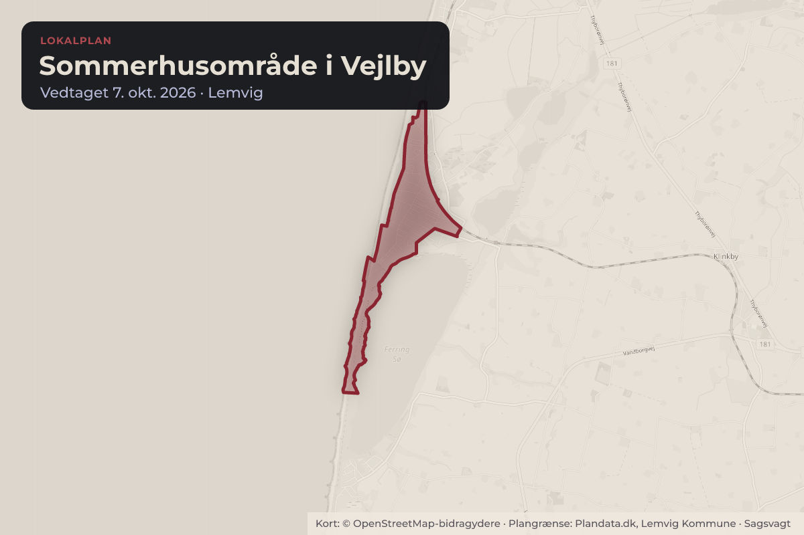
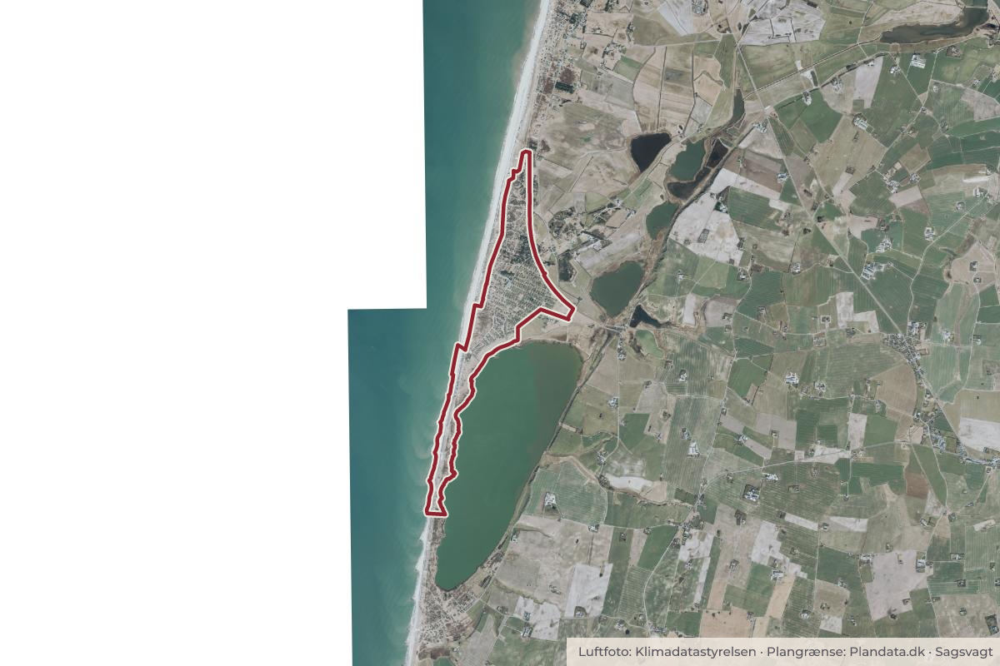

Besluttet 7. oktober, Kommunalbestyrelsen, Lemvig
Endelig vedtagelse af Lokalplan 246 - Sommerhusområde i Vejlby

Kort: © OpenStreetMap-bidragydere. Plangrænse: Plandata.dk, Lemvig Kommune.

Kort fortalt
- Hvem
- Kommunalbestyrelsen, Lemvig Kommune
- Hvornår
- Onsdag 7. oktober 2026
- Status
- Besluttet. Indstillingen godkendt.Beslutningen er forkortet her. Læs hele beslutningen
Er noget forkert her? Skriv til os
Læs hele sagen Kommunens egen tekst
Indstilling
At de indkomne høringssvar gennemgås med henblik på en vurdering af, om de
giver anledning til væsentlige eller tekniske ændringer i Lokalplan 246, og
At Lokalplan 246 - Sommerhusområde i Vejlby med gennemførte tekniske
korrektioner, og med de justeringer der fremgår af bilag med administrationens
bemærkninger til planen, vist med rød farve vedtages endeligt.
At justerede bestemmelser i denne Lokalplan 246 - Sommerhusområde i Vejlby
også ændres i Lokalplan 247 - Sommerhusområde i Vrist, så bestemmelserne
bliver helt ens .
Beslutning fra Teknik- og Miljøudvalget, den 22. september 2026, punkt 3:
For indstillingen stemte Bent Graversen, Peder Hummel, Henrik Grøn, Ole Kjærgaard og
Jonas Munkholm Jensen.
Imod stemte Peter Borup Sørensen og Trine Rønn.
Beslutning fra Økonomi- og Erhvervsudvalget, den 28. september 2026, punkt 7:
Lone P. Sørensen ønskede indstillingen til afstemning.
For indstillingen stemte: Jens Lønberg, Henrik Grøn, Chris Olesen og Søren V. Jensen.
Imod indstillingen stemte: Lone P. Sørensen, Gitte Winther Jeppesen og Trine Rønn.
Ingen undlod at stemme.
Indstillingen anbefalet.
Lone P. Sørensen stemte imod med følgende begrundelse: "Socialdemokratiet ønsker
ikke at give mulighed for at bygge med yderligere 20 m2. Vi ønsker at fastholde det
oprindelige lokalplanforslag der bygger på en grundig landskabsanalyse og et langt
politisk forløb, som vi mener, der skal være respekt om. Høringssvarene giver ikke
anledning til at lempe byggegrænserne. Tværtimod peger en betydelig del af de lokale
stemmer på, at de oprindelige rammer bør fastholdes. To af områdets tre
grundejerforeninger, der repræsenterer omkring 635 grundejere, opfordrer direkte til at
fastholde de oprindelige byggegrænser. Derfor ser vi ikke et grundlag for at fravige det
oprindelige forslag. Vi mener, at politiske beslutninger skal bygge på både faglighed og
respekt for høringsprocessen."
Sagen afgøres endeligt af
Kommunalbestyrelsen via Teknik- og Miljøudvalget og Økonomi- og Erhvervsudvalget.
Sagsfremstilling
Sagen er senest behandlet på et møde i Kommunalbestyrelsen den 2. juni 2026, sag nr. 1. Et
flertal vedtog, at der skal gives mulighed for opførelse af yderligere 20 m² byggeri i alle
delområder og at der i planen laves mindre justeringer som følge af de indkomne høringssvar
og at forslaget udsendes i fornyet 8 ugers høring. Høringen udløb den 21. august 2026.
Der er indkommet i alt 22 høringssvar, fra grundejere, områdets tre grundejerforeninger samt
fra Lemvig-Thyborøn Handel og Turisme. Alle de indsendte høringssvar er medtaget i ét
samlet bilag.
Flere af indsigelserne går på, at det først udsendte forslag til Lokalplan 246 med bestemmelser
om lidt mindre byggeri på grundene byggede på solide faglige vurderinger i en udarbejdet
landskabsanalyse. Flere opfordrer til, at Lemvig Kommune bør fastholde de oprindelige
grænser for byggeri i det enkelte delområde men med de øvrige justeringer i planen som
udsendt.
To af de tre Grundejerforeninger, Vejlby Strand samt Grundejerforeningen Vejlby Klitplantage,
der samlet repræsenterer ca. 635 grundejere har samme bemærkninger. Grundejerforeningen
Vejlby Klit med ca. 100 grundejere foreslår, at der ud over mulighed for ekstra 20 m² byggeri i
de enkelte delområder, kan opføres yderligere 10 m² overdækket terrasse, som ikke skal
indregnes i det samme bebyggede areal.
Enkelte foreslår justeringer af enkelte bestemmelser f.eks. opsætning af solceller på tage,
belysning m.m. Andre mener Lokalplan 246 indeholder så væsentlige ændringer i forhold til
udstykning af grunde samt byggeri i forhold til tidligere lokalplan, hvorfor tidligere bestemmelser
ønskes medtaget i den nye lokalplan, eller tinglyst deklaration om forbud mod udstykning
ønskes opretholdt.
I et særskilt bilag, har administrationen lavet bemærkninger til hver af de indkomne indsigelser.
I bilaget er kun centrale bemærkninger medtaget. Ud for hver af de fremsendte bemærkninger,
er der indsat bemærkninger om, hvorvidt der som følge af indkomne høringssvar bør ændres i
lokalplanens bestemmelser eller ej.
Administrationen anbefaler, at der træffes endelig beslutning, så lokalplanen kan vedtages
endeligt, da en række byggesager afventer behandling, hvor tilladelser til byggeri først kan
meddeles, når der foreligger en endelig vedtaget lokalplan. Første udkast til ny lokalplan blev
udsendt i december 2025.
I særskilt punkt også på dette møde, fremlægges Lokalplan 247 til endelig godkendelse. For at
bestemmelserne bliver helt ens, anbefales og indstilles det, at de foreslåede justeringer af
bestemmelserne i denne Lokalplan 246 også medtages i endelig Lokalplan 247.
Lovgrundlag
Planloven .
Politikker og strategier
Lokalplanen bidrager til realisering af Lemvig Kommunes mål for "Udvikling af bæredygtige og
attraktive nye og eksisterende sommerhusområder med naturen som vigtigt identitetsskabende
designparameter".
Tidligere politisk behandling
Sagen er senest behandlet af Kommunalbestyrelsen på et møde den 2. juni 2026, sag nr. 1.
Beslutning
Indstillingen blev bragt til afstemning.
Et flertal af Kommunalbestyrelsen stemte for indstillingen. Imod indstillingen stemte Lone
P. Sørensen, Steen Madsen, Marianne Dræby, Peter Borup Sørensen og Trine Rønn.
Ingen undlod at stemme
Socialdemokratiet stemte imod med følgende begrundelse: "Socialdemokratiet ønsker
ikke at give mulighed for at bygge med yderligere 20 m2. Vi ønsker at fastholde det
oprindelige lokalplanforslag der bygger på en grundig landskabsanalyse og et langt
politisk forløb, som vi mener, der skal være respekt om. Høringssvarene giver ikke
anledning til at lempe byggegrænserne. Tværtimod peger en betydelig del af de lokale
stemmer på, at de oprindelige rammer bør fastholdes. To af områdets tre
grundejerforeninger, der repræsenterer omkring 635 grundejere, opfordrer direkte til at
fastholde de oprindelige byggegrænser. Derfor ser vi ikke et grundlag for at fravige det
oprindelige forslag. Vi mener, at politiske beslutninger skal bygge på både faglighed og
respekt for høringsprocessen."
Indstillingen godkendt.
Gitte Winther Jeppesen deltog ikke i sagens behandling.
Kilde: Lemvig Kommune, Kommunalbestyrelsen, referat fra mødet onsdag 7. oktober 2026, punkt 3. Læs den originale sag hos kommunen.